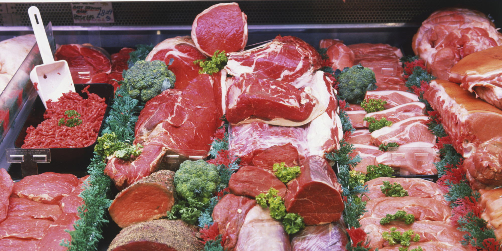
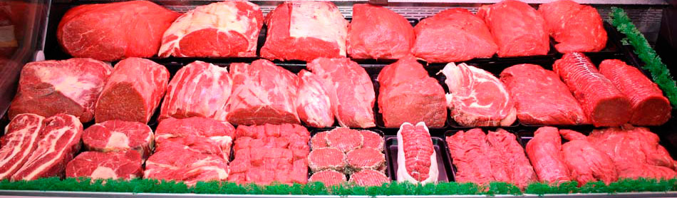

Les Différents Morceaux de Viandes

Saviez vous que les différentes viandes se répartissent en plusieurs morceaux?
| Viandes |
Pièces nobles |
Bas morceaux |
| Boeuf |
- Bavette
- Rumsteack
- Pièce Parée
- Faux filet
- Côtes
|
- Plat de côte
- Collier
- Basse côte
- Paleron/jumeau
- Jarrêt
|
| Veau |
| Porc |
| Agneau |
